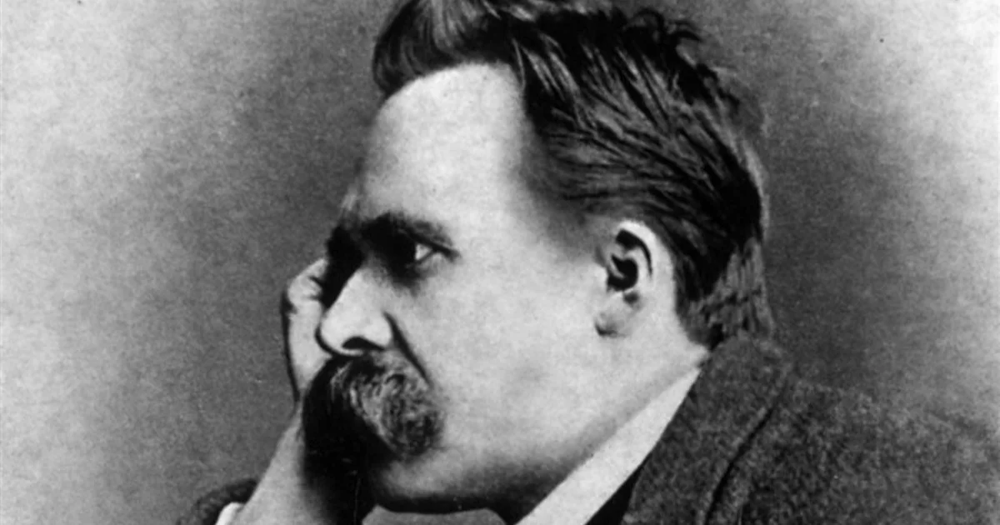
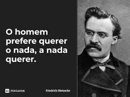
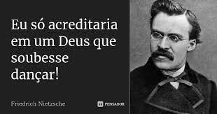

Nietzsche nasceu em 15 de outubro de 1844, na Prússia(Alemanha nos dias atuais). Cinco anos após seu nascimento seu pai que era pastor morreu. Depois de sua formação tendo base uma educação rígida e com pricípios luteranos, ele começa os primeiros questionamentos em relação a religião.
"O Niilismo é uma concepção filosófica baseada na ideia de não haver nada ou nenhuma certeza que possa servir como base o conhecimento. Ou seja, nada existe de fato."
Quer dizer que o Niilismo, nada mais é do que compreender que a vida não possui sentido ou finalidade, significa que não existe nenhuma fundamentação metafísica para a exstência humana.
Dependendo da sua interpretação, sim! Mas de acordo com Friedrich Nietzsche, o Niilismo se divide em dois, o passivo e o ativo.
Segundo Niestzsche, sim! Mas segunda a observação de Gilles Deleuze (1925-1995) sobre o niilismo, o niilismo se divide em 4 tipos, o negativo, o reativo, o passivo e o ativo.
O niilismo passivo já representa uma evolução humana, pois rompe com a tradição e com a moral cristã. Mas não existe mudança de valores.
Recomenda uma atitude mais ativa onde despreza-se os valores metafísicos e move a força vital para a devastação moral. Depois dessa devastação, tudo cai no vazio e a vida não possui sentido algum.
E segundo Nietzsche durante a entrevista ele se indentifica mais com o niilismo ativo, e não era de se esperar o contrário né! Já que em suas obras como "Assim falou Zarastra" ele despreza os valores metafísicos a fim de criar uma devestação moral. Como em uma de suas frases mais famosas "Deus está morto, e fomos nós que o matamos".
E a resposta foi "Não, não sou". Agora você deve estar se perguntado "Ele crítica todo tipo de religião, e não é ateu?". Muitos ficam confusos, porque o Nietzsche não tinha uma religião em si, mas ele acreditava em um Deus, segundo ele em "Assim falou Zarustra".
Seria um ser que está na Terra entre nós, e que tenta religar o homem com a própria terra e não com um tipo de céu!
Bem, o Niestzsche se indentificava com o niilismo ativo, e ele tinha a tendência de tentar destruir os valores morais, sendo o principal alvo os valores religiosos. Então ficava a pergunta "Ele é ou não ateu", e está ai a resposta!
Aqui você pode acessar a nossa entrvista com Nietzsche.
Resumo feito por:
Emanuel de lima
Milena Tavares
Eduarda Silvério
Maria eduarda Santos
Fontes:
https://mundoeducacao.uol.com.br/biografias/friedrich-nietzsche.htm
https://www.todamateria.com.br/niilismo/
https://colunastortas.com.br/niilismo/
https://www.educamaisbrasil.com.br/enem/artes/niilismo
https://www.pensador.com/frase/MjkwNzExOQ/